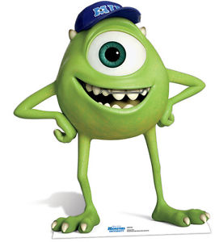
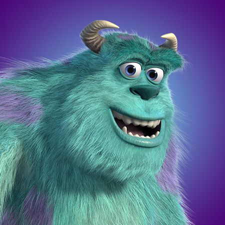

1.) Monsters University
Het verhaal
Mike Wazowski
- Volledige naam: Michael Wazowski 
- Roepnaam: Mike
- Over: Mike is een bolvormige monster met een groene huid en een smaragdgroen oog. Hij heeft slanke armen en benen, beiden met klauwen, maar hij heeft vier vingers aan elk hand en drie tenen aan elk voet. Qua persoonlijkheid is Mike grappig, slim en moedig, maar soms ziet hij niet wat voor de hand liggend is in een situatie. Hij is ook een zeer zorgzame en toegewijde vriend.
vaerhguveirbnvuerhkhwuefhbejwhgfqyegbcfegwyuafgewhufbewhfve egkfweyue54rstjhteje5ujrdtuj6rk56erj65j65uj65j65ekj7tok76ij54uy6iu76k7k6j65e6ij76i76rikrke6
James Sullivan
- Volledige naam: James P. Sullivan
- Eigenschappen: Sulley 
- Over: Sulley is een groot harig cyaan monster met magenta vlekken en maagdenpalmogen. Hij heeft gebogen hoorns, witte klauwen, vlijmscherpe hoektanden, witte stekels die langs zijn achterkant naar het einde van zijn lange dinosaurusachrige staart lopen en een grote harige buik. Sulley heeft een goedmoedige, hardwerkende en zelfverzekerde persoonlijkheid.
trj67kjrje5j5rkjutykjyrtjyik878k7ujh6rj5kr6jyyehgrewhtuj6rkm7kuj46ei5u7oipluytejnyjiutilkuykyt